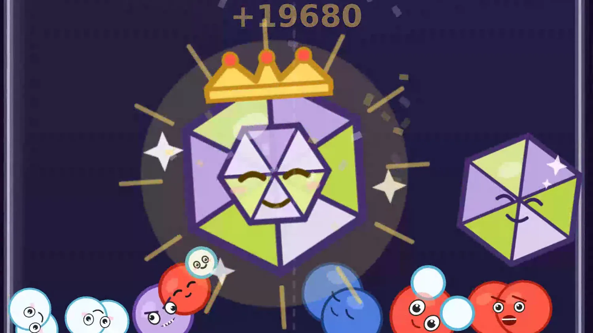
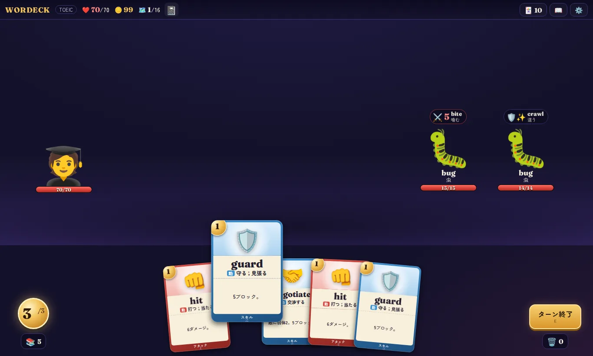
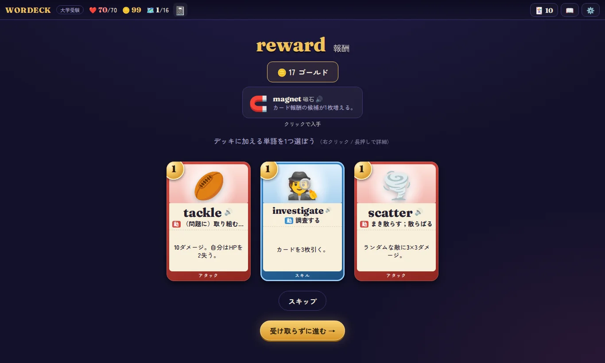
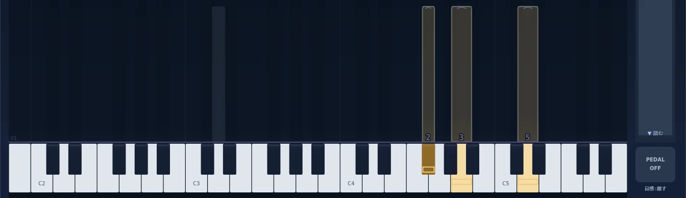

ブラウザゲーム
まぜるな危険!
フラスコに元素を落として、スイカゲームのようにくっつけていくパズルです。同じ原子がくっつくと分子になり、分子が原子や別の分子と出会うと実在の化学反応が起きます。
ナトリウムと水のような危険な組み合わせは爆発します。物質44種類と反応41種類を収録していて、日本語と英語で遊べます。
TypeScript / matter.js / Vite / Cloudflare Pages
遊ぶ →
アリの巣の観察シミュレーター
Ant Garden
アリが巣を掘り、餌を運ぶ様子を、地上と土の断面で観察できます。蜂蜜やコオロギを置くと、見つけたアリが道しるべのフェロモンを残し、行列ができます。
部屋の位置と形は乱数とまわりの状況で決まるので、同じ巣は二つとありません。夏の終わりから秋のはじめには羽アリが結婚飛行に飛び立ち、冬はアリが深い部屋に集まります。
JavaScript / 外部パッケージなしで動作
観察する →英単語のローグライクカードバトル
WORDECK
カードゲームを遊んでいたら、英単語を勝手に覚えていた。そんなゲームを目指して作っています。
1単語が1枚のカードで、カードの効果は単語の意味どおりです。abandon（見捨てる）は手札を全部捨てて同じ枚数を引き、postpone（延期する）は敵の次の行動を1回飛ばします。大学受験、英検、TOEICのコースがあり、オンライン対戦のモードもあります。
React / TypeScript / Vite / Cloudflare Workers / Durable Objects
制作中

MIDI鍵盤で遊ぶ音楽ゲーム
Piano Rhythm
音ゲーを遊んでいたら、実際のピアノで曲を弾けるようになっていた。それを目指して作っている、MIDI鍵盤向けのブラウザゲームです。
ノーツの色は右手が金色、左手が青緑で、濃さが音の強さを示し、ノーツには指番号も付いています。カノンとクラシック28曲の計29曲を、右手、左手、両手、全曲から選び、区間を指定して練習できます。
TypeScript / Vite / Web MIDI / Cloudflare Workers / Supabase
制作中